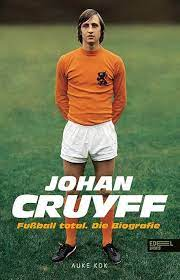

Total-Football


Een van Cruyffs belangrijkste bijdragen aan Total Football was zijn interpretatie van de 'totaalvoetballer'. Hij geloofde sterk in het idee dat spelers niet beperkt moesten zijn tot een specifieke positie op het veld. Cruyff zelf was een toonbeeld van veelzijdigheid, vaak te vinden op verschillende posities tijdens een enkele wedstrijd. Zijn vermogen om vanuit elke positie het spel te lezen en impact te hebben, benadrukte het concept van spelers die zowel aanvallende als verdedigende taken konden uitvoeren.
 Cruyff's impact reikte verder dan zijn spel op het veld; later in zijn carrière zette hij zijn filosofie voort
als
coach. Als manager van FC Barcelona in de jaren 90 implementeerde Cruyff een aangepaste versie van Total
Football,
Cruyff's impact reikte verder dan zijn spel op het veld; later in zijn carrière zette hij zijn filosofie voort
als
coach. Als manager van FC Barcelona in de jaren 90 implementeerde Cruyff een aangepaste versie van Total
Football, bekend als het 'totaalvoetbal van Barcelona'.
bekend als het 'totaalvoetbal van Barcelona'. Dit zou uiteindelijk een fundament leggen voor het succes van het team in de daaropvolgende jaren, en de invloed ervan is nog steeds voelbaar in het moderne voetbal. Johan Cruyff wordt vaak herinnerd als een visionair die niet alleen het spel veranderde met zijn voeten, maar ook met zijn geest. Zijn bijdrage aan Total Football heeft een blijvende erfenis achtergelaten in de tactische evolutie van het voetbalspel.